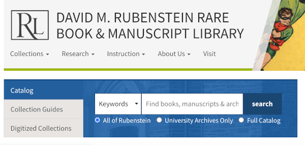
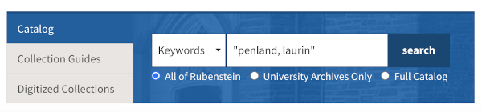
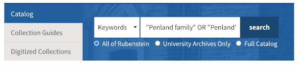
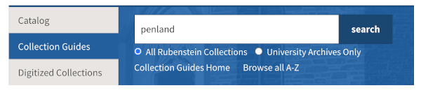
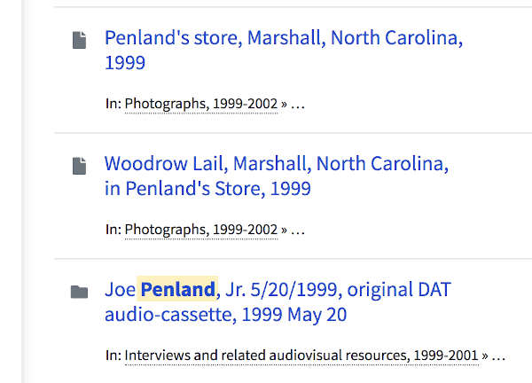

Identify the person or family name that is of interest. It is best if you have a first and last name, but it is also possible to search for first or last names, or for family names. For instance, in my case, I could search for my name, "Penland, Laurin" (notice how the last name is first), or I could simply search for "Penland" or "Penland family" or "Laurin". The less specific you are, the more broad your search will be. For more tips for using names for searches go to the Names page. For searching for enslaved ancestors, visit the Enslaved Ancestors page. Now that you have a name that you would like to search for, it's time to search in the library's catalog.
Let's start by searching the catalog. Open the David M. Rubenstein Rare Book & Manuscript Library's homepage. On this page you will notice that there is a search box with a drop-down menu on the left. Click on the drop-down menu and click "keyword" (this should be the default setting). You will also notice that there are a few other choices. Further left you can choose to search the Catalog, Collection Guides, or Digitized Collections. Choose catalog. On the bottom you'll notice choices to search all of the Rubenstein, University Archives, or the catalog for all of Duke Libaries. We'll be searching all of the Rubenstein. See the picture below for the correct settings.

Type in the name that you would like to search.

Pro tip: you can search for multiple variations of a name at once by adding "OR" between the names that you're are searching. So, in the example shown below I searched for "Penland" OR "Penland, Laurin" OR "Penland family" OR "Penland". Notice that "OR" is capitalized. This is called a Boolean search.

Browse your results. It's okay if you strike out! In my case, none of the results were related to me or my family. Most of the results have to do with the Penland School of Craft. Let's try again with a different kind of search.
This time we're going to search Collection Guides instead of the catalog. Collection Guides often offer more detail about some of the larger manuscript collections. They may list folder titles, describe folder contents, have item titles, and sometimes photograph captions. This time I am just going to search for my last name.

When I sift throught the search results I find items about my father and about my grandfather's general store.

Once you have identified items that you are interested in viewing, you need to request to see the items in the reading room at the Rubenstein Library. For that, you will need to register and request the items in advance. There are detailed instructions on the Rubenstein's web page. While the request and registration process may seem intimidating, don't let it stop you! Be brave. Librarians and archivists have worked very hard to preserve these materials so that they could be shared with people like you.